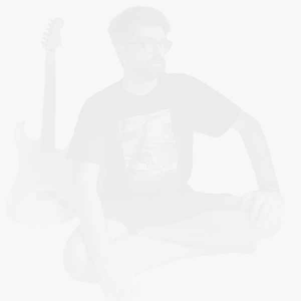

Back to Home

Nice to meet you, Name's Anton. I'm an italian developer, born in '95 in the
island of Sardinia.
My youth is spent in the early 2000s cultivating my first passions, which
will accompany me to this day: Music (guitar playing), Videogames and
everything related to tech.
My early education, moved by my love for japanese role-playing videogames
and their complex strategies, is of scientific nature, where i quickly find
math to be my favourite subject. Because of that, at the age of 14 I will
choose a scientific path for high school: the "Liceo Scientifico". Here I
will further delve into scientific subjects such as physics and chemistry,
and start messing up with computer science as a hobby, building my first
applications.
My adult education, after a couple years of work and research of what i
really liked (during which I took the IELTS Academic to achieve a C1 level
proficiency in English) was then quickly put on the Computer Science road. I
studied in Milan, heart of the tech world in Italy, at the
"University of Milan-Bicocca". Here I've done my most important experiences,
where I spent half of my college time meeting new people and exploring new
concepts in the bustling city of Milan and the other half with the challenge
of remote studying and going back to my dear Sardinia.
After my college degree I then quickly started my first work experiences as
a developer, taking an internship where i could better my
Java skills, as well as learning the fundamentals of backend
development using frameworks like Spring, Hibernate, and how
to work with SQL and noSQL databases. In my working
experiences i could also tackle frontend development, where i learned how to
incorporate in my skillset things like Javascript/Typescript,
HTML and CSS, but also frameworks like Angular and
React.
Right now I'm based in Milan and working as a fullstack developer. Wanna
know more or reach out to me? You can find my main socials on the top of the
page, as well as a contact form in the bottom of this page. I'll reach out
as soon as possible and thanks for showing interest.
A sa salude!
Contact me!